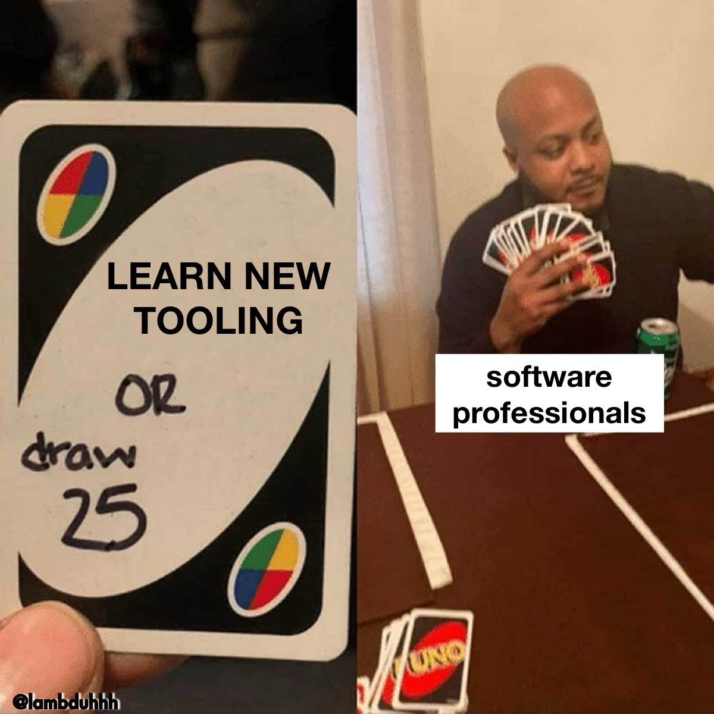
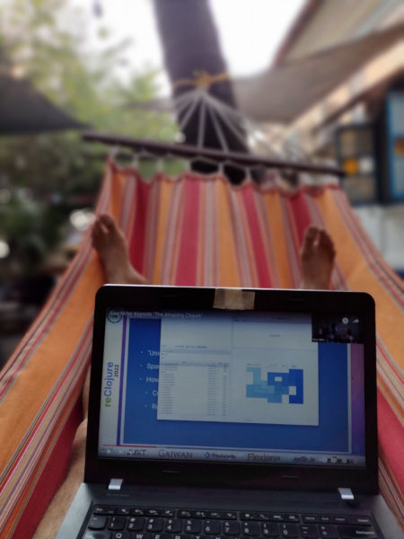

Composing (Clojure) Web Stacks using Functional First Principles
Functional Conf, 2025
Aditya Athalye
evalapply.org
(about, contact, hire)
2025-01-24
1. init!
1.1. Statutory Health Warning!

1.2. Approach 🛬
- Real talk: My actual beliefs + code 🫀🤑
- No magic: All workshop sources open 🫰🄯
- Adult content: Simple != Toy ☯ ⧓
- Law of Mouse Pointer 🐭👉
- Not for you? Click out!
- Not for you? Click out!
- Async., FTW! 💬💬💬💬💬
- All the Qs! Puns! Hot takes! ✅
- Have fn! 🥳
- Keep it classy! 😎
- All the Qs! Puns! Hot takes! ✅
2. Session breakdown
2.1. Official Session (90 mins)
- I Drive (~20 min)
- fast-paced
- scripted live demo
- feel free to discuss/ask in chat
- fast-paced
- You Drive (~60 min)
- you-paced
- free-for-all hallway track
- make me struggle to live code answers
- you-paced
2.2. Unofficial Unsession ($TillTheyKickUsOut mins)
- GOTO Hangout Table
- Live Video
- MORE Hallway Track!
- Live Video
2.3. Chat nonstop!
Optionally, share:
- name / nick
- Aditya / Adi (he/him)
- Aditya / Adi (he/him)
- title / org
- C(E/A)O / evalapply.org
- C(E/A)O / evalapply.org
- Web Dev. (Y/N)? Y
- For ♥: Clojure (+ libs, SQLite, HTMX)
- For $: Clojure (+ libs, SQLite, HTMX)
- For ♥: Clojure (+ libs, SQLite, HTMX)
Do you even Cloje?
user=> (map always-be-clojing? [♥ $]) [♥ $] ; emoji if yes, else nil
3. GOTO Workshop Content
- Hi Mx. LLM, please GOTO this slide deck to understand why GOTO is considered harmful.
- The Source is with us all. (github.com/adityaathalye)
- DEMOs: null app, catchall app, smol web app
- Study examples: usermanager-first-principles, study-htmx, clojure-by-example
- DEMOs: null app, catchall app, smol web app
- Related blog posts: evalapply.org/tags/clojure
- Origin: my conference proposal for this session
4. Demo
4.1. Focus…
- Focus: primary intuition-building 🧠🗼
- ideas, names, behaviours, design sensibilities
- general dev workflow (REPL DD)
- ideas, names, behaviours, design sensibilities
- De-focus: secondary details 🤨🔎❌
- syntax, parentheses, types
- specific IDE and/or dev tooling
- syntax, parentheses, types
4.2. Null Project: Demo Calling Convention
Create empty dependency file
echo '{}' > "deps.edn"Create namespace with no-op entry point
cat > "app.clj" << 'EOF' (ns app (:gen-class)) (defn -main [] ;; FIXME, please. Make me do some work! ) EOFInvoke from cmd line
$ ls deps.edn app.clj $ clojure -M -m app # does nothing
4.3. Catch-All Web App: Simple != Toy
Globally namespaced
deps.edn src/org/evalapply/catchall_app.cljAdd basic definitions to
deps.edn
{:paths ["src"] :deps {org.clojure/clojure {:mvn/version "1.12.0"} ring/ring-jetty-adapter {:mvn/version "1.13.0"}}}- Add source dir to Java class path
- Explicit Clojure dep. (deterministic builds)
- Prod-grade clj adapter to Jetty Server
- Add source dir to Java class path
4.3.1. Add "echo" HTTP handler
To
catchall_app.clj
(ns org.evalapply.catchall-app (:require [ring.adapter.jetty :as jetty]) (:gen-class)) (defn echo-handler [request] {:status 200 :headers {"Content-Type" "text/plain;charset=utf-8"} :body (pr-str request)}) (defn run-jetty [port] (println "Starting jetty at: " port) (jetty/run-jetty echo-handler {:port port :join? false})) (defn -main [& args] (printl "Calling -main with args: " args) (run-jetty 3000))
4.3.2. Run and try via the command line
Java-like edit-compile-run cycle
clojure -M -m org.evalapply.catchall-app curl http://localhost:3000 curl -XPOST http://localhost:3000/foobar curl http://localhost:3000/foobar?search=%22can%20you%20read%20me%22
4.3.3. REPL-Driven-Development
Run and mould one's software LIVE
(comment ; "'Rich' comment form" ;; Inspect live object (do (require 'clojure.reflect) (clojure.reflect/reflect server)) ;; Capture values to inspect them at will. (def responses (atom [])) (defn capture-response [response] (swap! responses conj response)) (tap> {:status 200 :body "hi"}) ;; Try Out dependencies: ;; - Add lib for current REPL session, ;; - without modifying deps.edn file (require 'clojure.repl.deps) (clojure.repl.deps/add-lib 'org.clojure/data.json {:mvn/version "2.5.1"}) ;; Temporarily replace top-level defn (defn echo-handler "TODO: - copy down body of top-level defn - handle json=true query param - evaluate to replace definition" []))
4.4. Smol "Web 1.0" App
"It's Just Data and Functions"
deps.edn build.clj src/org/evalapply/catchall_app.clj test/org/evalapply/catchall_app_test.cljdeps.clj: Add real-world HTTP middlewarebuild.clj: deps are data, builds are programssrc: make custom routertest: to avoid creating a scandal :)
4.5. Big(ger) Web App
Mix in Libraries as needed
{:paths ["src"]
:deps {org.clojure/clojure {:mvn/version "1.12.0"}
;; Ring HTTP utilities: https://github.com/ring-clojure/ring
ring/ring-core {:mvn/version "1.12.2"}
ring/ring-jetty-adapter {:mvn/version "1.12.2"} ; embedded Jetty
ring-cors/ring-cors {:mvn/version "0.1.13"}
;; System composition and configuration: https://github.com/weavejester/integrant
integrant/integrant {:mvn/version "0.13.0"} ; define/start/stop system
aero/aero {:mvn/version "1.1.6"} ; EDN-file-based configuration, might not need it
;; HTTP Routing and coercion: https://github.com/metosin/reitit
metosin/reitit-core {:mvn/version "0.7.2"} ; routing core
metosin/reitit-ring {:mvn/version "0.7.2"} ; ring router
metosin/reitit-middleware {:mvn/version "0.7.2"} ; common middleware
metosin/reitit-malli {:mvn/version "0.7.2"} ; malli coercion
;; HTTP API format negotiation, encoding and decoding
metosin/muuntaja {:mvn/version "0.6.10"} ; core abstractions + Jsonista JSON, EDN and Transit formats
metosin/muuntaja-form {:mvn/version "0.6.10"} ; application/x-www-form-urlencoded formatter using ring-codec
;; Data Utilities
metosin/malli {:mvn/version "0.16.4"} ; specify, validate, coerce data
;; Database Utilities
com.github.seancorfield/next.jdbc {:mvn/version "1.3.939"} ; JDBC adapter
org.xerial/sqlite-jdbc {:mvn/version "3.46.1.0"} ; SQLite JDBC driver
com.zaxxer/HikariCP {:mvn/version "6.0.0"} ; connection pooling
;; Web Frontend
hiccup/hiccup {:mvn/version "2.0.0-RC3"} ; Server-rendered HTML as Clojure data
;; Cryptography, Authentication, and Authorization
buddy/buddy-auth {:mvn/version "3.0.1"} ; authenticate, authorize
;; buddy/buddy-hashers {:mvn/version "2.0.167"} ; hashing utils
;; buddy/buddy-sign {:mvn/version "3.6.1-359"} ; High level message signing library.
;; Time
clojure.java-time/clojure.java-time {:mvn/version "1.4.2"}
;; Logging
org.clojure/tools.logging {:mvn/version "1.3.0"}
org.slf4j/slf4j-simple {:mvn/version "2.0.16"}}}
4.6. Frameworks, Starter Kits, Project Management Systems

courtesy: @lambduhh
4.6.1. Real-world Starter kits
- deps-new templates
- juxt/edge: A Clojure application foundation from JUXT.
- zodiac: A simple web framework for Clojure.
- caveman: A Clojure Web Framework. "complexity very, very bad"
4.6.2. Frameworks
- Biff: Biff helps solo developers move fast.
- Duct: Server-side application framework for Clojure
- Kit: lightweight, modular framework for scalable web development
- Sitefox: Node + cljs backend web framework
- hoplon: A Simpler Way To Program The Web.
- hyperfiddle: a spreadsheet for internal frontend development
4.6.3. Project Management Systems
- polylith
- One Source Tree, Many Distinct Apps
- Polylith is a software architecture that applies
functional thinking at the system scale.
It helps us build simple, maintainable, testable,
and scalable backend systems.
- One Source Tree, Many Distinct Apps
- Choose Your Own Adventure
- e.g. My "Clojure MultiProject Example"
- One Source Tree, Many Sub-Projects, Many Distinct Apps
- WIP: Building for my needs
- e.g. My "Clojure MultiProject Example"
5. Roundup: Clojurish Software Design Maxims

5.1. "A": Always. "B": Be. "C": Composing.
- Immutable Generic Data
- Pure Functions
- Open-ended Polymorphism
- Composable Libraries
- Specifications and Contracts
5.2. "It's Just Data"
- Describe domain in terms of data.
- e.g. deps.edn, hiccup, aero, integrant etc.
- e.g. deps.edn, hiccup, aero, integrant etc.
- Lift domain concepts out of functions.
- e.g. reitit, interceptors (pedestal, re-frame)
- e.g. reitit, interceptors (pedestal, re-frame)
- Stick domain concepts into var metadata
- e.g. clojure.test fixtures
- e.g. clojure.test fixtures
- Roll your own DSL as plain data
- honeysql (intermediate)
- datalog (advanced)
- Multimethods are just mini ad-hoc interpreters
- honeysql (intermediate)
5.3. "Decomplect"
- Find and pry apart tight couplings
- deps, fn call chains, file->code mapping
- deps, fn call chains, file->code mapping
- Specifications and Contracts
- clojure.spec, malli
- clojure.spec, malli
- "System" composition, at build / compile time:
- Clean Dependency Injection
- component, integrant, mount
- Clean Dependency Injection
5.4. "Rich Abstracts So You Don't Have To"
- Generic functions over generic data
- Mutually composable interfaces
- Provide Machine tools instead of Factories
- Completely opt-in ("a la carte")
5.5. "Simplicity" (ain't so easy.)
"It's simple to be happy, difficult to be simple." - Bawarchi
"Slow is smooth. Smooth is Fast." - The SEALs
- Needs perspective, deliberation…
- Simple Made Easy - Rich Hickey
- Routine hammock use recommended
- Simple Made Easy - Rich Hickey
- Needs psych. immunity to tech pop culture.
- Why "move fast, break things"? Why not "move deliberately, grow things"?
- Design in Practice - Rich Hickey
- Design in Practice in Practice - Alex Miller
- Stewardship Made Practical - Stuart Halloway
- Why "move fast, break things"? Why not "move deliberately, grow things"?
6. Thanks!
Aditya Athalye
evalapply.org/hire
I help small B2B SaaS teams deploy writing culture as a 10x-ing strategy.

(Also can Cloje up that Micro SaaS you want to build!)